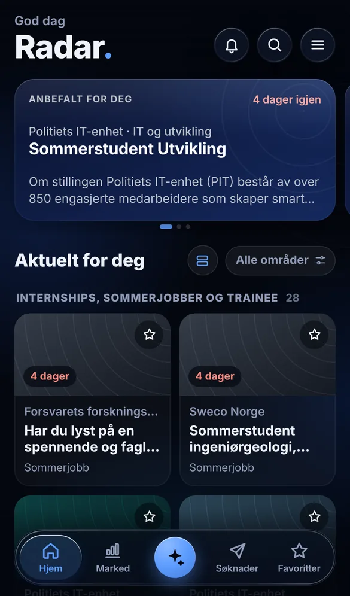
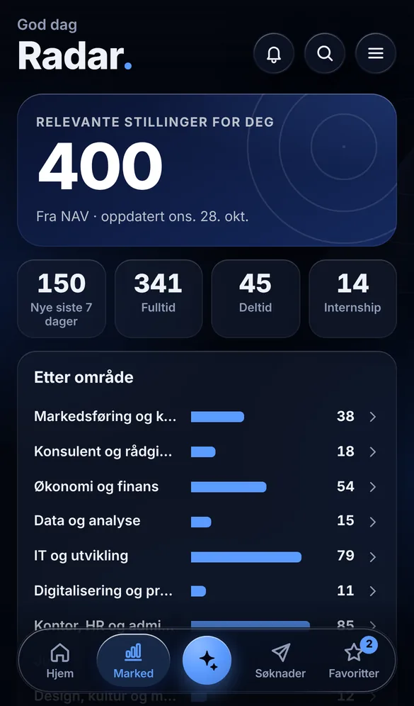

Internshipene finner deg.
Radar leter gjennom NAV og karrieresidene til norske arbeidsgivere hver natt, og viser internships, sommerjobber og trainee som passer deg. Gratis, uten konto.
Henter stillingene fra i natt …
Hentet fra NAV og rett fra arbeidsgiverne
Hver natt henter Radar alle ledige stillinger fra NAV og sjekker karrieresidene til rundt 50 arbeidsgivere, blant dem Tise, DNB, Gjensidige, Equinor og Schibsted. Stillinger som går ut eller blir fjernet, forsvinner av seg selv.
Alle ledige stillinger, uten kontaktpersoner
Internships og sommerjobber fra karrieresidene deres
Sorterer etter sted, type stilling og områdene du har valgt
Internships øverst, og resten under
FINN er ikke med, fordi vilkårene ikke tillater at stillingene hentes automatisk. Sjekk FINN i tillegg, og legg inn det du finner der i Radar.


Alt fra første treff til tilbudet
Internships først
Internships, sommerjobber og trainee står øverst. Resten sorteres etter områdene og stedene du har valgt.
Fristene samlet under bjella
Bjella viser det som haster: frister denne uken, intervjuer og søknader du bør følge opp.
Søknadene på ett sted
Marker det du har søkt på, og følg det videre til intervju, case og tilbud.
Hjelp til å søke
Lag et søknadsutkast, øv på intervjuspørsmål og sjekk CV-en mot stillingen. Claude-knappen bruker din egen Claude-konto.
Det du lagrer, er ditt
- Ingen konto
- Du svarer på noen få spørsmål om hva du ser etter, og så er du i gang.
- Bare på telefonen
- Favoritter, søknader, notater og CV ligger bare på din telefon. Ingen andre ser dem.
- Gratis
- Radar koster ingenting og har ingen reklame.
Kom i gang på ett minutt
-
Åpne Radar i Safari på iPhonen
Er du på PC, kopierer du lenken og sender den til deg selv.
-
Legg den på hjemskjermen
Trykk på del-knappen nederst i Safari og velg «Legg til på Hjem-skjerm». Da får Radar sitt eget ikon og åpnes som en vanlig app.
-
Velg hva du ser etter
Åpne Radar fra hjemskjermen og velg sted, type stilling og områder. Du kan endre det når du vil under «Hva vil du se?».
Har du Android, åpner du lenken i Chrome, trykker på menyen øverst til høyre og velger «Legg til på startskjermen».